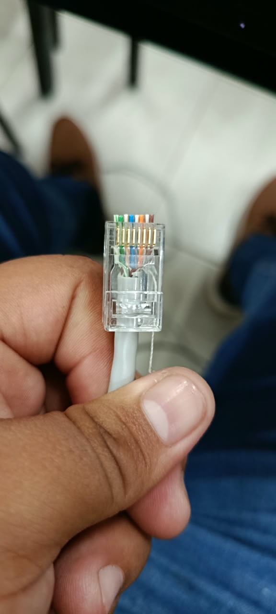
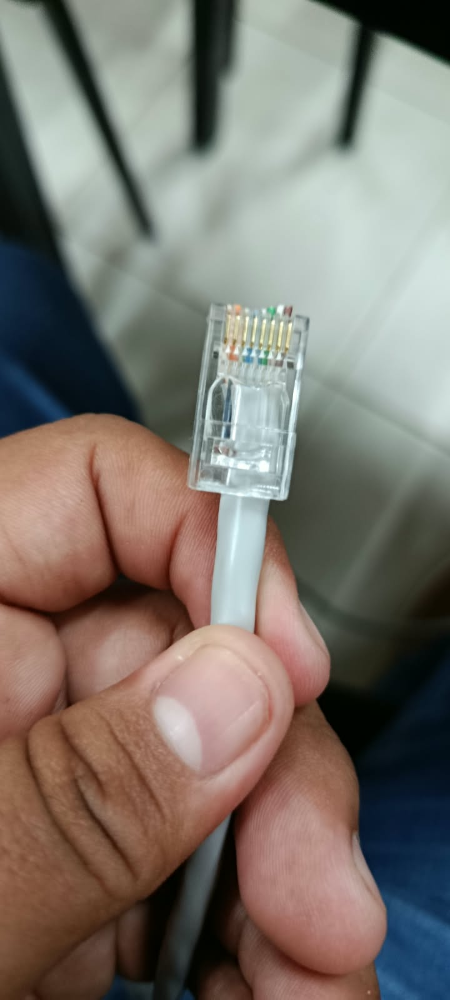
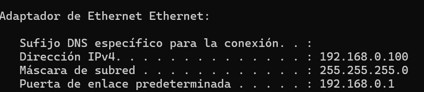
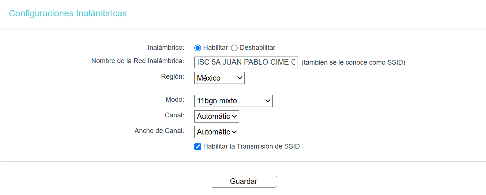
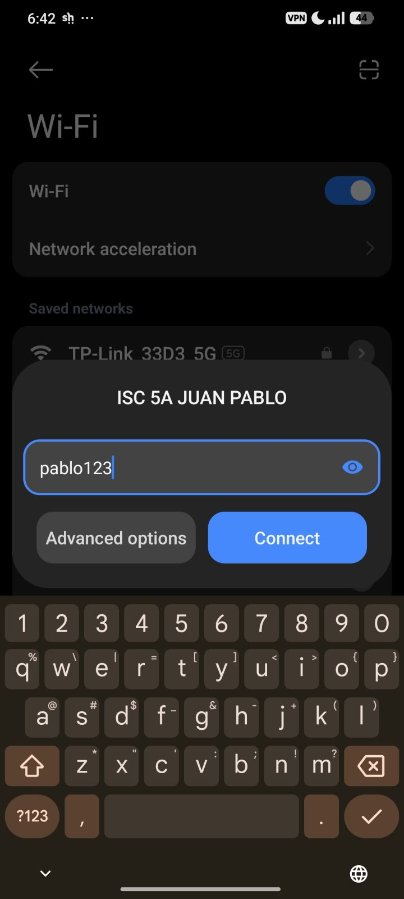
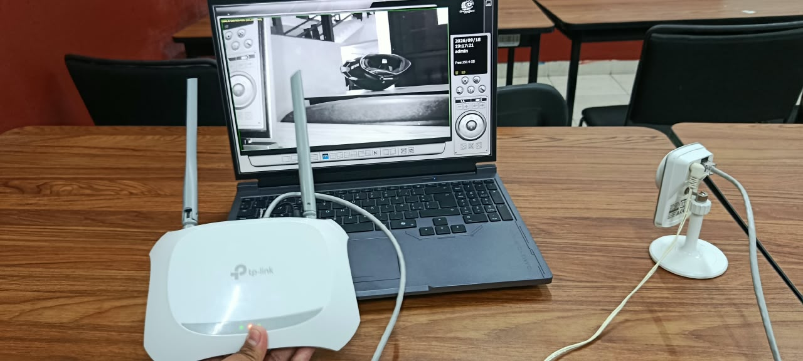
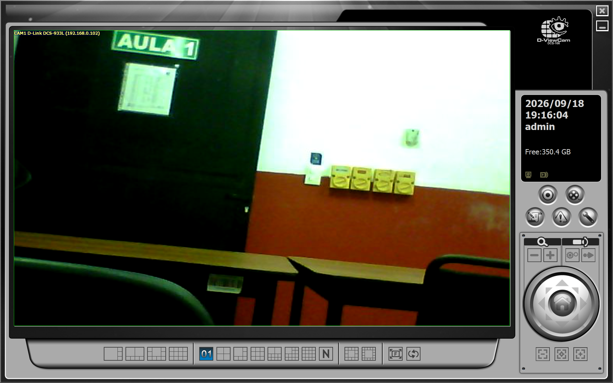

Introducción
Este reporte documenta tres prácticas de redes realizadas en laboratorio: el ponchado de cable UTP con las normas T568A y T568B, la configuración de un router inalámbrico TP-Link TL-WR840N y la conexión de una cámara IP D-Link DCS-933L a la red que se creó.
Las prácticas forman una secuencia. Primero se fabrican los cables, después se usan para configurar el equipo de red y, por último, se conecta un dispositivo final a esa red. El resultado es un modelo de conexión que combina cableado estructurado, Ethernet, red inalámbrica y un dispositivo IP de videovigilancia, todo con estándares vigentes.
- Práctica 1: CablesPonchado de un cable con la misma norma en ambos extremos (B-B) y otro con normas distintas (A-B).
- Práctica 2: RouterConfiguración del TL-WR840N desde la laptop, conectada por Ethernet con cable B-B.
- Práctica 3: CámaraCámara DCS-933L conectada por cable al router y laptop conectada por Wi-Fi.
Objetivo
Diseñar un modelo de conexión que integre distintas tecnologías y dispositivos con estándares actualizados, y documentar su uso, su metodología y la evidencia de su funcionamiento.
Metodología general
Cada práctica siguió el mismo ciclo de trabajo: preparar el material, ejecutar el procedimiento, verificar el resultado con una herramienta o prueba y documentarlo con fotografías o capturas de pantalla. Las evidencias se numeran como figuras y se refieren en el texto.
Equipo y software utilizados
| Equipo | Función | Práctica |
|---|---|---|
| Cable UTP y conectores RJ45 | Fabricación de los cables B-B y A-B | 1 |
| Pinza ponchadora y probador de cable | Ponchado y verificación de los cables | 1 |
| Router inalámbrico TP-Link TL-WR840N | Red Wi-Fi 802.11n a 2.4 GHz, hasta 300 Mbps, con dos antenas | 2 y 3 |
| Laptop con Ethernet y Wi-Fi | Configuración del router por cable y conexión inalámbrica posterior | 2 y 3 |
| Cámara IP D-Link DCS-933L | Dispositivo IP de videovigilancia | 3 |
| Software proporcionado por el docente | Localizar la cámara en la red y ver su video | 3 |
Estándares de referencia
Cada práctica se apoya en normas que definen cómo se fabrica, se conecta y se protege una red.
- ANSI/TIA-568
- Cableado de telecomunicaciones. Define los esquemas de color T568A y T568B y las categorías del cable de par trenzado (Cat5e, Cat6).
- ISO/IEC 11801
- Cableado estructurado genérico. Es el equivalente internacional de TIA-568 y fija límites como los 100 m por segmento.
- IEEE 802.3
- Ethernet por cable. Incluye 100BASE-TX (Fast Ethernet), 1000BASE-T (Gigabit) y la alimentación por Ethernet (PoE, 802.3af/at). Los puertos del TL-WR840N son Fast Ethernet (10/100 Mbps).
- IEEE 802.11
- Redes inalámbricas de área local (Wi-Fi). El TL-WR840N trabaja con 802.11b/g/n en la banda de 2.4 GHz.
- WPA2-PSK
- Seguridad de la Wi-Fi Alliance. Cifra la red inalámbrica con AES y una contraseña compartida.
- TCP/IP y DHCP
- Familia de protocolos de Internet y servicio que asigna direcciones IP de forma automática a los dispositivos de la red.
Práctica 1: Ponchado de cable UTP
Objetivo
Fabricar dos cables de red, uno con la misma norma en ambos extremos y otro con normas distintas, y reconocer la diferencia entre ellos.
Para qué sirve
El cable con la misma norma en ambos extremos (B-B) se llama directo y conecta dispositivos de distinto tipo, por ejemplo una laptop con un router o un router con una cámara. El cable con normas distintas (A-B) se llama cruzado y conecta dispositivos del mismo tipo, como dos laptops.
Hoy la mayoría de los equipos detecta el tipo de cable automáticamente (Auto-MDIX), pero conocer la diferencia es la base del cableado estructurado. Fast Ethernet (100BASE-TX) solo usa los pines 1, 2, 3 y 6, que corresponden a los pares naranja y verde, y por eso esos son los hilos que cambian entre la norma A y la norma B.
Modelo B (directo): ambos extremos del UTP se ponchan igual, con la misma norma (T568B en los dos lados).
Modelo A-B (cruzado): un extremo se poncha como la norma B. En el otro extremo solo se intercambian los pares: los hilos naranjas ocupan exactamente el lugar de los verdes y los verdes el de los naranjas. Los pares azul y café no cambian de posición.
Materiales
- Cable UTP
- Conectores RJ45
- Pinza ponchadora
- Probador de cable
Procedimiento
- Cortar dos tramos de cable UTP.
- Retirar unos 3 cm de la cubierta sin dañar los pares.
- Destrenzar los hilos y ordenarlos según el esquema de color que corresponda a ese extremo. Conviene destrenzar lo mínimo necesario para no afectar el rendimiento del cable.
- Recortar los hilos a la misma altura e insertarlos en el conector RJ45 hasta que toquen el fondo.
- Ponchar el conector con la pinza.
- Repetir el proceso en el otro extremo: con la misma norma en el cable 1 y con la norma A en el cable 2.
- Probar cada cable con el probador de cable.
Esquemas de color
| Pin | Norma B | Norma A | Diferencia |
|---|
Las filas resaltadas (pines 1, 2, 3 y 6) son las que cambian: el par naranja pasa a los pines 3 y 6, y el par verde pasa a los pines 1 y 2.
Cable 1: modelo B, mismo esquema en ambos extremos
Cable 2: un extremo con norma B y el otro con norma A
Verificación
En el cable directo, los ocho indicadores del probador se encienden en orden del 1 al 8. En el cruzado se intercambian los pines 1 y 3, y los pines 2 y 6, mientras que 4, 5, 7 y 8 se mantienen, lo que confirma que el intercambio de naranjas y verdes quedó correcto.
Evidencia


Práctica 2: Configuración del router TP-Link TL-WR840N
Objetivo
Acceder a la configuración del TL-WR840N desde una laptop conectada por Ethernet y crear una red Wi-Fi protegida.
Para qué sirve
El TL-WR840N es un router inalámbrico N de 300 Mbps con dos antenas. Reparte la conexión entre sus puertos LAN de cable y su red Wi-Fi, y asigna direcciones IP a los dispositivos mediante su servidor DHCP. Para configurarlo se conectó la laptop por cable, de modo que el acceso no dependiera de la red Wi-Fi que se estaba modificando. Se usó el cable B-B porque la laptop y el router son dispositivos de distinto tipo.
En clase a este equipo se le llama módem. Técnicamente el TL-WR840N es un router inalámbrico, y en este reporte se usa la palabra router para referirse a él.
Procedimiento
- Conectar la laptop a un puerto LAN del router con el cable B-B (norma B en ambos extremos) y encender el equipo.
- En la laptop, abrir el símbolo del sistema y ejecutar el comando
ipconfig. - En el adaptador Ethernet, localizar la Puerta de enlace predeterminada. Esa es la dirección del router; en este modelo suele ser 192.168.0.1.
- Escribir esa dirección en la barra del navegador e iniciar sesión en el panel de administración.
- Abrir la configuración inalámbrica y definir el nombre de la red (SSID), la seguridad WPA2-PSK y la contraseña.
- Guardar los cambios y comprobar que otro dispositivo pueda ver la red y conectarse.
C:\> ipconfig
Adaptador de Ethernet Ethernet:
Dirección IPv4. . . . . . . . . . . . : 192.168.0.100
Máscara de subred . . . . . . . . . . : 255.255.255.0
Puerta de enlace predeterminada . . . : 192.168.0.1Salida de "ipconfig"
Parámetros configurados
| Equipo | TP-Link TL-WR840N |
|---|---|
| Nombre de red (SSID) | ISC 5A JUAN PABLO CIME CHIM |
| Seguridad | WPA2-PSK |
| Contraseña | pablo123 |
| Estándar inalámbrico | IEEE 802.11b/g/n, banda de 2.4 GHz |
| Cable de configuración | UTP directo (B-B) entre laptop y router |
| Herramienta de acceso | ipconfig para obtener la puerta de enlace |
Evidencia



Práctica 3: Cámara IP D-Link DCS-933L
Objetivo
Conectar una cámara IP D-Link DCS-933L al router y visualizar su video desde la laptop, conectada por Wi-Fi, con el software proporcionado por el docente.
Para qué sirve
Una cámara IP es un dispositivo final que transmite video por la red usando el protocolo IP, por lo que puede verse desde cualquier equipo de la misma red local. En esta práctica se combinaron dos medios: la cámara quedó conectada por cable UTP al router y la laptop se conectó de forma inalámbrica. Es un modelo común en videovigilancia, donde los dispositivos fijos van por cable y los equipos de consulta por Wi-Fi.
El cable B-B se usó de nuevo porque la cámara y el router son dispositivos de distinto tipo. En instalaciones más grandes es común alimentar las cámaras por el mismo cable mediante PoE (IEEE 802.3af/at).
Procedimiento
- Alimentar la cámara con su adaptador de corriente.
- Conectar la cámara a un puerto LAN del router con el cable B-B.
- Conectar la laptop a la red Wi-Fi creada en la práctica anterior para establecer la conexión inalámbrica.
- Abrir el software proporcionado por el docente y buscar la cámara en la red. El servidor DHCP del router le asigna su dirección IP.
- Abrir la transmisión y verificar que el video se muestre en vivo.
Condición para que funcione: el software solo encuentra la cámara si laptop y cámara están en la misma red local. Como ambas dependen del mismo router, reciben direcciones del mismo rango y pueden comunicarse aunque una use cable y la otra Wi-Fi.
Evidencia


Modelo de conexión integrado
El modelo final une las tres prácticas. La cámara llega al router por UTP, la laptop lo configuró primero por cable y después se conectó por Wi-Fi, y el router extiende la red inalámbrica a otros equipos.
Desliza el diagrama para verlo completo.
| Práctica | Tecnología | Estándar principal |
|---|---|---|
| 1. Ponchado de cable UTP | Cableado estructurado | ANSI/TIA-568 (T568A y T568B) |
| 2. Router TL-WR840N | Ethernet y Wi-Fi | IEEE 802.3, IEEE 802.11, WPA2 |
| 3. Cámara DCS-933L | Dispositivo IP en red local | TCP/IP, DHCP |
Resultados
| Práctica | Resultado | Evidencia |
|---|---|---|
| 1 | Un cable B-B, con la misma norma en ambos extremos, y un cable A-B, con naranjas y verdes intercambiados en un extremo, verificados con el probador. | Figuras 1 y 2 |
| 2 | Acceso al TL-WR840N desde la laptop por Ethernet usando la puerta de enlace obtenida con ipconfig, y red Wi-Fi creada con seguridad WPA2-PSK. | Figuras 3, 4 y 5 |
| 3 | Cámara DCS-933L conectada por cable B-B al router, laptop conectada por Wi-Fi y video en vivo en el software del docente. | Figuras 6 y 7 |
Conclusiones
Las prácticas permitieron recorrer una red completa desde la capa física hasta el dispositivo final: se fabricaron cables según ANSI/TIA-568, se accedió a un router y se protegió su red inalámbrica con WPA2, y se integró una cámara IP mediante software de gestión.
La diferencia entre los cables quedó clara al ponchar ambos: en el modelo B los dos extremos son iguales, y en el modelo A-B solo se intercambian los pares naranja y verde. Ese detalle explica por qué un cable directo conecta equipos distintos y uno cruzado conecta equipos iguales.
También se comprobó que un mismo router puede unir cable e inalámbrico en una sola red local. El modelo es pequeño, pero sigue los mismos principios y estándares que una instalación profesional.
Aprendizajes principales
- Distinguir y fabricar cables B-B y A-B según ANSI/TIA-568.
- Usar
ipconfigpara encontrar la puerta de enlace y acceder a un router. - Configurar una red Wi-Fi con nombre propio y seguridad WPA2-PSK.
- Integrar un dispositivo IP a una red que combina cable y Wi-Fi.
Referencias
- ANSI/TIA. (2018). ANSI/TIA-568.2-D: Balanced twisted-pair telecommunications cabling and components standard.
- ISO/IEC. (2017). ISO/IEC 11801-1: Information technology, generic cabling for customer premises.
- IEEE. IEEE Std 802.3: Standard for Ethernet.
- IEEE. IEEE Std 802.11: Wireless LAN medium access control (MAC) and physical layer (PHY) specifications.
- Wi-Fi Alliance. WPA2 Security.
- TP-Link. TL-WR840N: Router inalámbrico N de 300 Mbps, especificaciones y guía de usuario. [Agregar enlace y fecha de consulta]
- D-Link. DCS-933L: Cámara de red inalámbrica, manual de usuario. [Agregar enlace y fecha de consulta]